Quadrotor Navigation using Reinforcement Learning with Privileged Information
A drone flies to a goal using only a depth camera and its own velocity and attitude estimate. One small neural network turns those inputs straight into thrust and a yaw angle. There is no map and no separate planner on board.
Earlier networks of this kind keep the nose pointed at the goal, so they get stuck or crash when a big wall is in the way. This paper adds two things during training: a loss that rewards pointing the camera where the drone is moving, and a time-of-arrival (ToA) map, which is a grid that stores how long the fastest collision-free route to the goal takes from every point. The map is used only to compute the training loss. The trained network never sees it.
Result: 86% success over 1,350 simulated trials (best baseline: 52%), and 20 real outdoor flights covering 589 m with no crash.
Core Idea: Escaping Large Obstacles & Differentiable Physics
Why prior RL methods fail on large walls/corners, and how analytical gradients train the policy.
The Result, and Why Fixed Heading Fails Behind a Big Wall
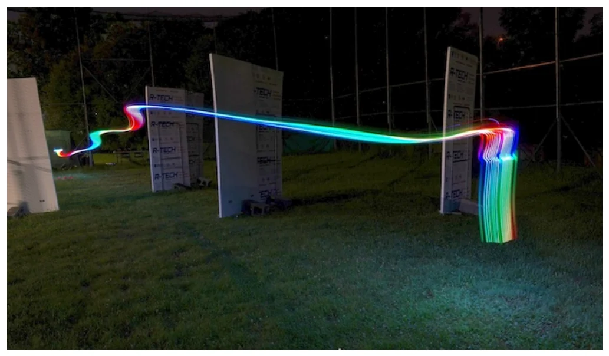
Sketch, not from the paper: pick a policy to see how it behaves when a large wall blocks the straight line to the goal.
-∇T(x) sets the target velocity direction around the wall, while Lyaw aligns the depth camera (xB) with the flight path. At test time, no map is needed!
Analytical Policy Gradients (APG) Through Physics
The simulated physics sk+1 = f(sk, uk) is differentiable. So the loss Lk at each step can be pushed backwards through the dynamics to the policy weights (red arrows). No expert demonstrations are needed.
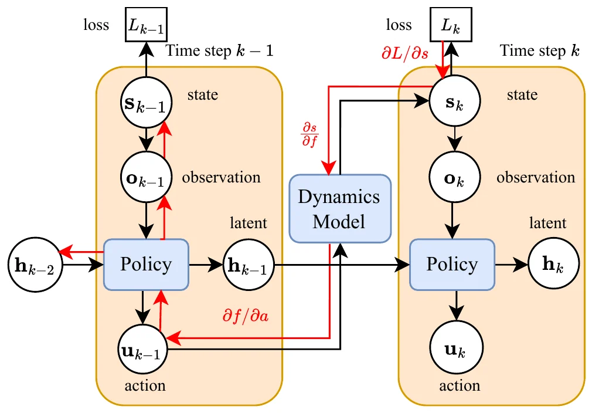
∂L/∂θ. Training uses backpropagation through time with temporal gradient decay, batch size 16, 10K iterations. The dynamics is a simple point mass (Eq. 1–3), which trains faster than the full quadrotor model.
End-to-End Neural Network Architecture
Three inputs, each turned into a 192-number vector, summed, then passed through a GRU (a small recurrent layer that keeps memory).
Single-Network Planning & Control Policy
Unlike Zhang et al. [2], this architecture uses a dedicated Target Extractor incorporating goal importance (1 / dgoal so the network knows whether the goal is in front of or behind an obstacle in the depth map), applies LayerNorm before summing, and predicts Yaw ψk alongside 3D mass-normalized thrust tk.
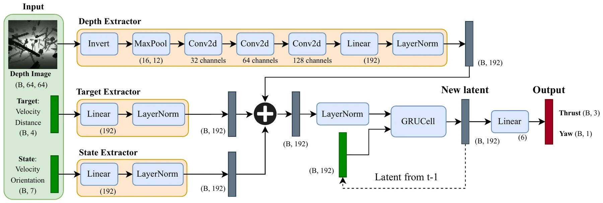
Privileged Information: Time-of-Arrival (ToA) Maps & Training Arena
Solving the Eikonal equation |∇T(x)|F(x) = 1 via Fast Marching Method (FMM) for shortest-path supervision.
Time-of-Arrival Heatmap T(x) & Shortest-Path Gradients
Local ESDF maps only push the robot away from walls, trapping it in concave rooms. The ToA map propagates wavefront travel time from the red goal using speed F(x) (Eq. 12), so -∇T(x) guides trajectories smoothly around corners.
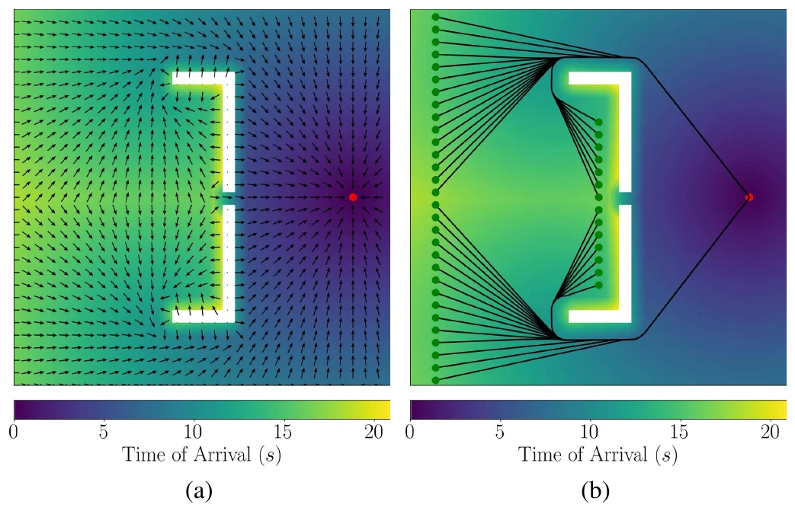
Sketch, not the paper's data: a small 2D grid solved in your browser with a simple wavefront search. Click free space to add a start point.
Top-Down Cylindrical Training Arena (rcyl = 12.5 m)
Trained in a customized VisFly + Habitat-Sim simulator with pre-generated random primitives (spheres, cylinders, cuboids). Agents spawn on a 12.5 m circle (θ ∼ U(0, 2π)) and converge to the center goal (blue).
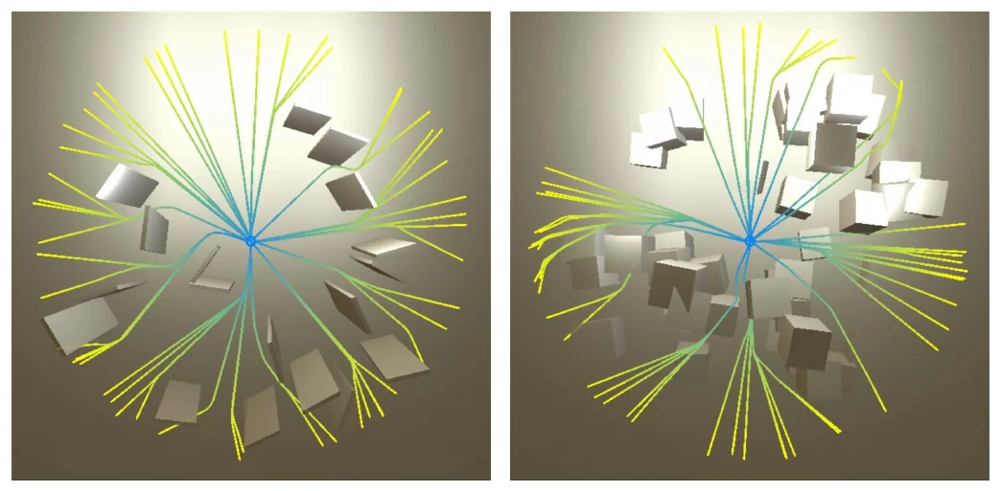
Schedule: the first 500 iterations use an empty arena with no collision loss, which keeps gradients stable. Then obstacles are added. Arenas and ToA maps are generated once, before training.
Mathematical Formulation, Loss Functions & Interactive Curve Explorer
Every equation from Section III of the paper, plus interactive plots of Eq. 4 (Clearance Loss) and Eq. 12 (Eikonal Speed).
vk+1 = vk + ½(ak + ak+1)Δt, ak+1 = tk+1 − [0, 0, g]⊤
tk ∈ ℝ3 Mass-normalized thrust
ψk ∈ ℝ Predicted yaw
zB ∥ tk Body z-axis
Lcollision = T−1 Σk ‖vkc‖ max(1 − (dk − r), 0)2
dk Nearest obstacle dist
r Robot radius
vkc Velocity toward obstacle
Lacc Hover stability
Lω New body-rate penalty reducing abrupt yaw oscillation
Lvmax = T−1 Σk max(‖vk‖ − vmax, 0)2
v̄k 2s moving avg velocity
vkset Directed along ToA gradient −∇T(x)
xkB Body x-axis (camera forward)
ṽk EMA of velocity
Aligns camera heading with motion
where m = (dsafe − vslow) / (dsafe − r)
T(x) Minimum travel time
F(x) Slows wavefront near walls to bias paths toward safe clearance
m is as printed in the paper. It makes F = dsafe at the threshold, so the two pieces meet only when dsafe = 1 m
Linear combination weighted by Table I coefficients below
ωd Desired angular rate setpoint
Eliminates 200 ms attitude control response lag
Hyperparameters in Total Loss L (Eq. 4, 14)
Notice that obstacle avoidance (λclearance = 6.0, λcollision = 6.0) and velocity tracking (λv = 4.0) carry the largest weights.
| Parameter | Symbol | Role in Training | Value |
|---|---|---|---|
| Acceleration weight | λacc |
Hover stability & smooth thrust (Eq. 6) | 0.01 |
| Jerk weight | λjerk |
Penalizes sudden thrust changes (Eq. 7) | 0.001 |
| Angular rate weight | λω |
Damps abrupt yaw accelerations (Eq. 8) | 0.3 |
| Target velocity weight | λv |
Tracks ToA-guided 2s avg velocity (Eq. 9) | 4.0 |
| Max speed weight | λvmax |
Bounds speed above vmax (Eq. 10) | 1.0 |
| Clearance weight | λclearance |
Softplus obstacle buffer penalty (Eq. 4) | 6.0 |
| Collision weight | λcollision |
Approach speed toward obstacle (Eq. 5) | 6.0 |
| Yaw alignment weight | λyaw |
Aligns camera x-axis with velocity (Eq. 11) | 1.0 |
| Softplus scale & decay | β1, β2 |
Clearance curve shape parameters (Eq. 4) | 2.5, −6.0 |
How Obstacle Distance d(x) Shapes Loss & ToA Wavefront Speed
Move the sliders to see the softplus clearance penalty (β1=2.5, β2=−6.0, from Table I) and the wavefront speed F(x). The paper does not list dsafe, vslow or r, so the slider values and r = 0.15 m are examples.
Simulation Experiments & Benchmark Plots (1,350 Trials)
Evaluated under full rigid-body quadrotor dynamics in Flightmare across 11 unseen environments without ToA maps at test time.
Out-of-Distribution Generalization Benchmark (1,350 Total Trials)
BNL [2] keeps a fixed heading. Yaw w/o ToA is this paper's network trained without the ToA map. Ours uses both. Solid = success, stripes = timed out, cross-hatch = collision. The chart below the figure repeats the success rates so you can filter them.
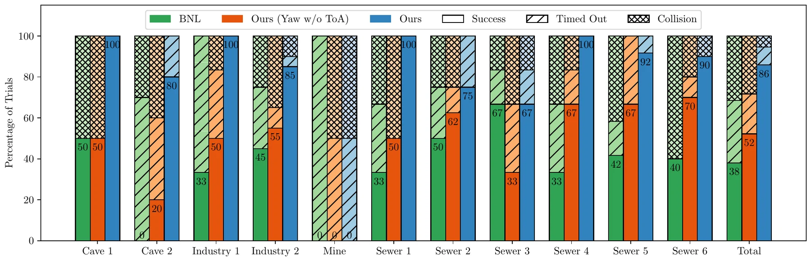
Eliminating the 200 ms Attitude Tracking Latency
Controllers tracking only desired orientation Rd (as in [2]) suffer a ~200 ms response lag (Fig. 6a). Adding the Euler-Jacobian body-rate derivative term ωd (Eq. 15) achieves near-zero latency (Fig. 6b).
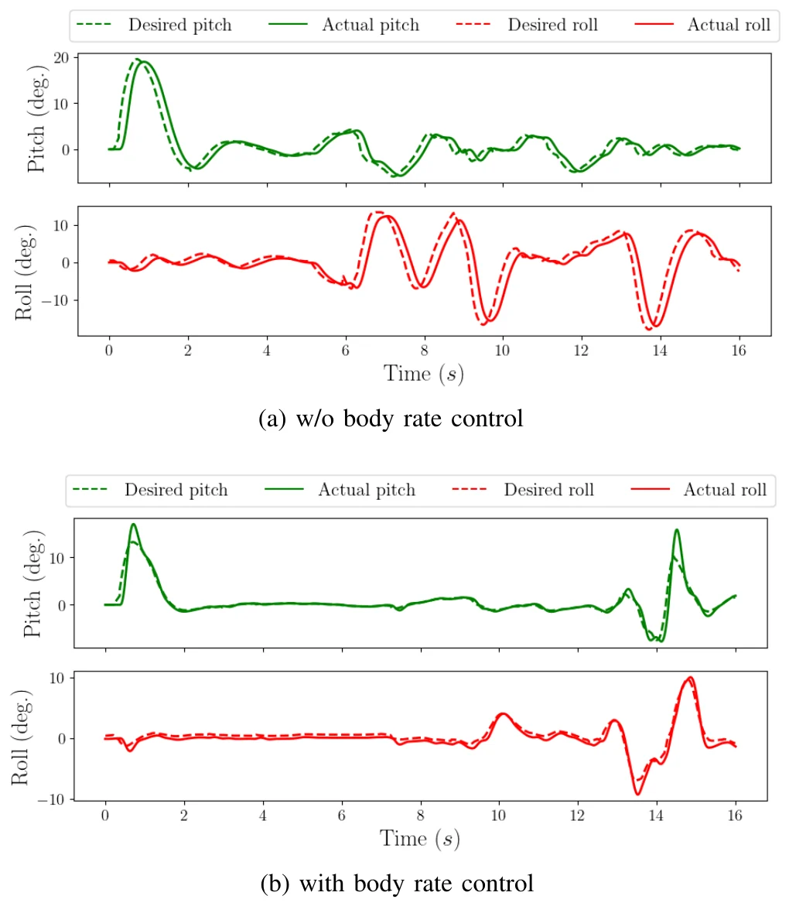
Where the Baselines Fail
Paths are drawn on a cut-away of the environment and coloured by speed (red to yellow, up to vmax = 3 m/s). Blue = start, magenta = goal.
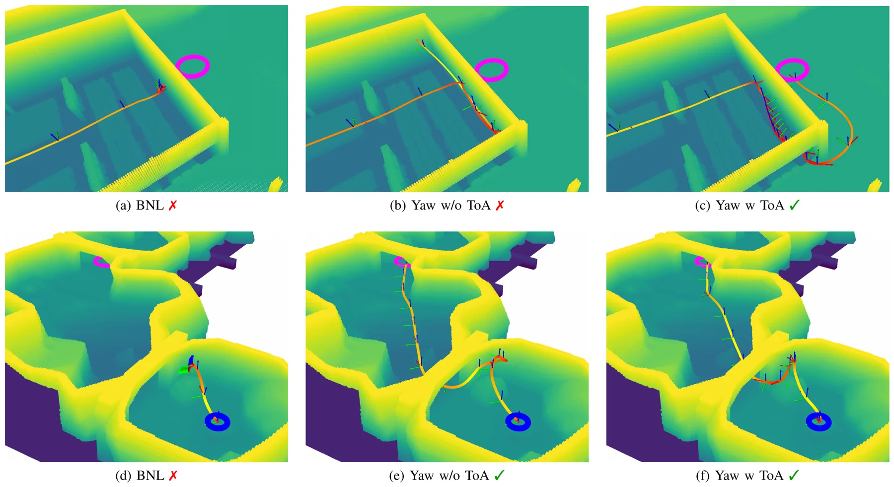
| Policy | Industry 2 (top) | Cave 2 (bottom) |
|---|---|---|
| BNL [2] | ✗ (a) | ✗ (d) |
| Yaw w/o ToA | ✗ (b) | ✓ (e) |
| Ours (Yaw w/ ToA) | ✓ (c) | ✓ (f) |
The paper's reading: BNL struggles with large flat obstacles because its heading stays fixed on the goal. Yaw alone lets the drone turn, but without ToA guidance it often times out in concave (pocket-shaped) regions.
Sim-to-Real Hardware Deployment, Domain Randomization & 20 Outdoor Flights
Zero-shot transfer from point-mass simulation to a 1.7 kg custom quadrotor in outdoor arenas, dense forest canopy, and night flights.
Compensating for 15% Real-World Thrust Mismatch
Due to battery voltage drop and airflow, the real drone needs ~1.15g commanded thrust just to hover. Without gravity randomization (Fig. 9a), the policy outputs 1.0g and drops to the ground. With g ∼ N(9.81, 1.52) in training (Fig. 9b), it raises thrust up to 1.3g from velocity feedback and reaches the red setpoint.
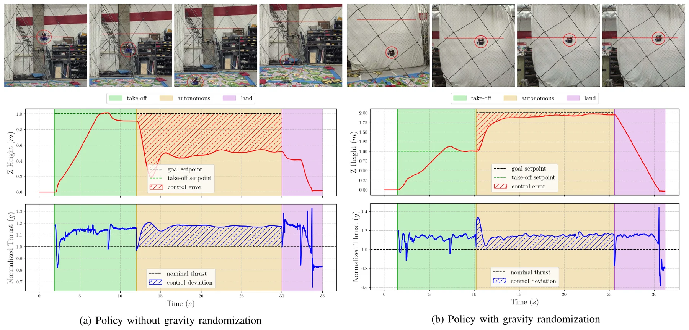
Training Randomization Distributions (Table II)
Applied during point-mass training so the GRU recurrent state learns closed-loop velocity and thrust adaptation.
| Randomized Quantity | Distribution | Parameters (Table II) |
|---|---|---|
| Gravity g | g ∼ N(μ, σ2) |
μ = 9.81, σ = 1.5 m/s2 |
| Initial Height z | z ∼ U(zmin, zmax) |
zmin = 0.5, zmax = 2.5 m |
| Initial x, y | rcyl cosθ, rcyl sinθ |
rcyl = 12.5 m, θ ∼ U(0, 2π) |
| Target Speed vtarget | vtarget ∼ U(vmin, vmax) |
vmin = 1, vmax = 5 m/s |
| Velocity Noise vnoise | N(μ, σ2) ∈ ℝ3 |
μ = 0, σ = 0.05 m/s |
| Rotation Noise rnoise | N(μ, σ2) ∈ ℝ3 |
μ = 0, σ = 0.02 rad |
• Compute & FC: NVIDIA Orin NX (16 GB RAM) + TBS Lucid H7 (Betaflight @ 1000 Hz IMU)
• Sensors: Forward Intel RealSense D456 depth camera, downward Lightware SF20/C rangefinder, Matrix Vision BlueFox2 global-shutter greyscale camera
• Rates: depth images at 60 Hz (640×480), policy at 50 Hz. Position comes from monocular visual-inertial odometry, no GPS
Real-World Forest Underbrush Navigation (Fig. 10) & Night Flights (Fig. 11)
In Table III Forest Flight 4 (Fig. 10), the quadrotor traverses 70.1 m in 23.7 s under dense tree canopy, predicting up to 30° yaw changes to weave through branches at speeds up to 3.8 m/s (vmax = 5.0 m/s). The third row of Fig. 10 shows what the network actually sees: the depth image after it is inverted and max-pooled down to a coarse grid.
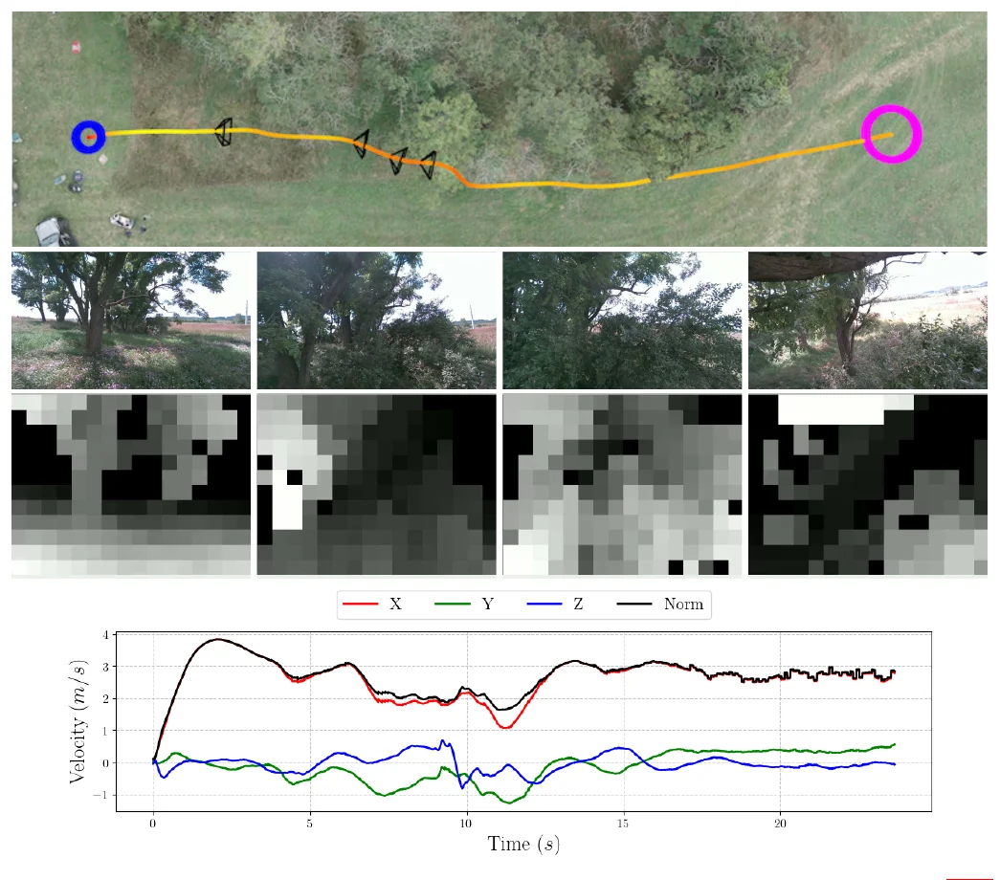
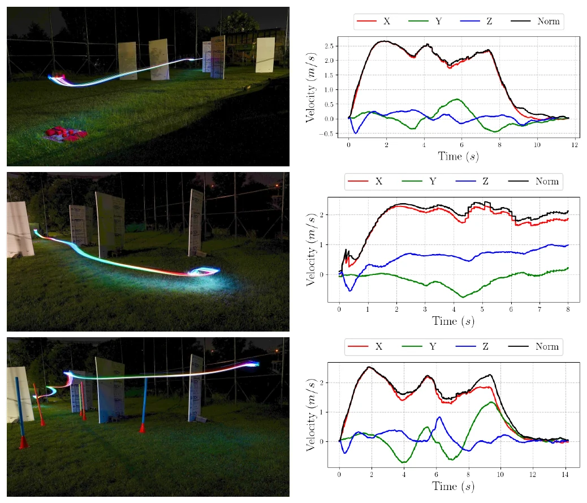
All 20 Outdoor Hardware Flights (Arena Flights 1–15 & Forest Flights 1–5)
Every single flight from Table III in the paper. Filter by environment or sort by metric to inspect flight times, path lengths, target speed limits (vmax), max speeds, and average speeds.
| Environment | Flight # | Flight Time (s) | Path Length (m) | vmax (m/s) | Max Speed (m/s) | Avg Speed (m/s) |
|---|
Figures are from the paper: J. Lee, A. Rathod, K. Goel, J. Stecklein and W. Tabib, arXiv:2509.08177. They belong to the authors. Click a figure to open it full size.